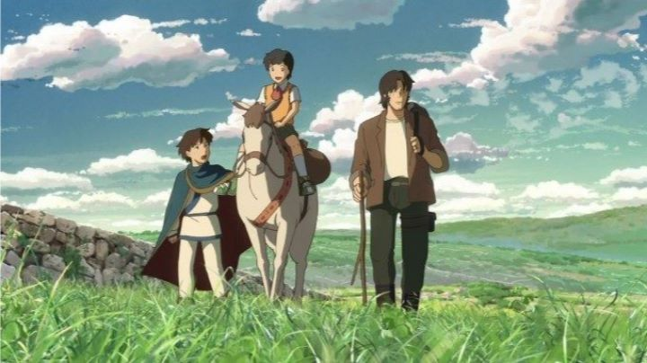

Makoto Shinkai is a poet in the anime industry. His past works generally focused on innocent and melancholy romance between characters, and revolving films around these emotions. His works have also gone in and out of print in North America, as both ADV Films and Bandai Entertainment had published them and have since gone out of business. For now, his 2011 release: "Children Who Chase Lost Voices From Deep Below", from Sentai Filmworks, thankfully with a shortened name for English audiences. I would recommend this one over Shinkai's films prior to 2011's "Lost Voices," not only because it is much easier to find and purchase, but because the film itself is much more accessible to the average viewer. The movie centers around a young girl Asuna, who has lived a difficult life: her father died while she was young, and her mother works late, so she has taken care of herself while still going to school. One day, a large creature attacks her, and she is saved by a boy who claims to be from another land named Agartha. A sweet friendship starts, but the very next day the boy is discovered dead. Unable to believe this, Asuna accidently finds herself on an adventure to the incredible world of Agartha with a professor determined to bring his own wife back from the dead, and a second boy from Agartha who is determined to stop them. This film is Shinkai's first in trying to be an entertaining adventure as opposed to just conveying emotion, and it is clear that the plot's details suffer for it. Terms of places and creatures are thrown about all over the place, as if written by a clumsy science fiction writer. Despite this, Shinkai's original themes are still here, and this helps make the plot emotionally moving, even though emotion isn't the main focus. The world of Agartha, compared to as an underworld where God resides, has many interesting ideas. There are a couple loose ends that are left (for example, the boy at the beginning never did fully explain why he left Agartha to come to our human world), but this might have been better left for your imagination anyway. And it does end well, with a interesting climax and message that will likely win you over, making it more satisfying overall than Shinkai's previous films (to me, personally). The characters are well-realized. Asuna herself is a sweet girl, and her cat-like creature Mimi is cute enough to steal every scene it's in. The professor (Mr. Morisaki) ranges from understanding to cold and selfish, which is appropriate for the character and his role in the film. Shin, the boy from Agartha, is similar, but easier to like as he saves Asuna more than once. However you feel about these characters, you'll feel for them by the end. Visually, the film is lovely, with more detail than Shinkai's previous films but also not quite as refined. Backgrounds are wonderfully detailed, and character design seems improved over past films (although still not as strong as other anime). Creature designs take a lot of inspiration from Studio Ghibli films, and fans will recognize inspiration from "Castle in the Sky," "Princess Mononoke," Nausicaa," and even "Kiki's Delivery Service." The world is colourful and pleasant, even though locations might be a little too varied at times. Note that this movie does get violent at times, with limbs getting cut off and blood being spilt, making the PG rating somewhat underrated. Audio is fitting, with appropriate music and a nice lyrical track at the end. The English dub was a hit-and-miss for me: at some points the emotions feel true, at others the weak dialogue makes the scene feel awkward, but nothing too problematic. I would recommend bluray for this, since it is the only Shinkai film in North America to get a bluray release, and all his films really deserve it.  Overall, it seems that the film itself and the main character's journey are very similar. They start off well-meaning, but with little direction as to where they are going, but ultimately end up satisfied with where they concluded. I feel after watching this film that I understand Makoto Shinkai's themes are little more: they aren't just about love and loss, and the emotions that few filmmakers dare show on screen. His films are also about not being able to let go of the memories of the past, even if it stops you from appreciating what you have in the present and the future. This theme is more obvious in this film than his past works, and while some fans might be disappointed with that, anyone still unsure about Shinaki's talent should really give this a try. As both a film and a message together, this is his not necessarily his most successful, but certainly his most accessible, and I can't wait to see what he does next.
- "Ani" More reviews can be found at : https://2danicritic.github.io/ Previous review: review_Children_of_the_Sea Next review: review_Chivalry_of_a_Failed_Knight